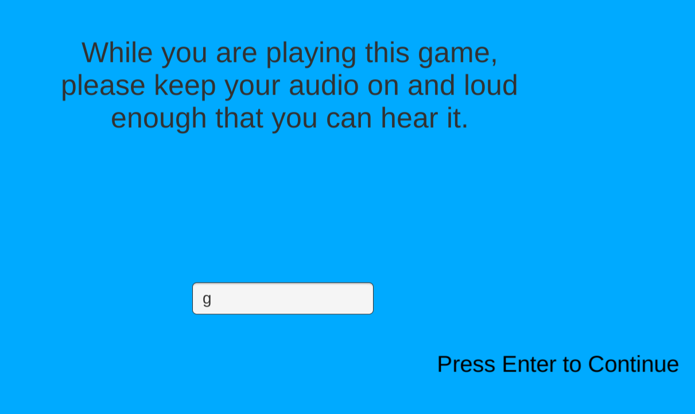

While attending Bradley University I agreed to make a game for one of my professors Owen Shaffer in an
independent study. Every year he would pick a couple of students to make games to use in his ever-expanding study
on the psychology of how and why games are "fun". I also did this so I could personally get a good grasp of all aspects that go
into game creation from programming, to design, to sound, and playtesting. This was a very important learning
experience I had and taught me a great many things that I use to this day.
Puzzle Design
The core gameplay loop is the completion of sliding block puzzles, where you are trying to navigate your ship form
one end of a maze to another.
The hardest part of this whole experience was making enough new mechanics and twists that I could put on those mechanics.
It was both a challenging yet rewarding experience that pushed my design and puzzle skills to their limits and beyond.
There are 8 different objects that you can interact with and they were used to create 30 different puzzles of varying difficulty.
Aside from the first one, all puzzles are chosen by a dynamic difficulty system.
This makes it so that whether you are a seasoned puzzle player or less experienced you will be given puzzles more
suited to your skill level. Your skills being determined by how quickly you complete each previous puzzle.
As a way of getting all the mechanics across I have a short skippable tutorial before each puzzle so that nobody is ever
confused about an upcoming mechanic.
Story
There are technically 7 different stories that you could have when playing this game. Due to the fact that
to test for the "fun" value Dr.Shaffer wanted different circumstances for doing these puzzles to see how engaging different
people found different stories.
In order to facilitate these different stories I had to make a dialogue system that you can see above and that I built off
of for another game I made Doom Mates. Showing one letter at a time until all the text is shown and the audio line is completed
before letting the player proceed. While it's something I wouldn't do in the future it is something Dr.Shaffer asked me to do
specifically for his research study.
While you can't hear it now, all the lines from each story are fully voiced by me. I tried my best to give each story its own unique
feel and sound. Doing several takes of some lines till I got all the lines to sound as natural as I could.

Since there was a lot of audio involved in this project I was asked to have this screen appear between each puzzle
and would have a voice line be said with a letter. This was done to make sure people were listening to the story and not muting their
computers throught the story. To get accurate data for a questionnaire at the end.